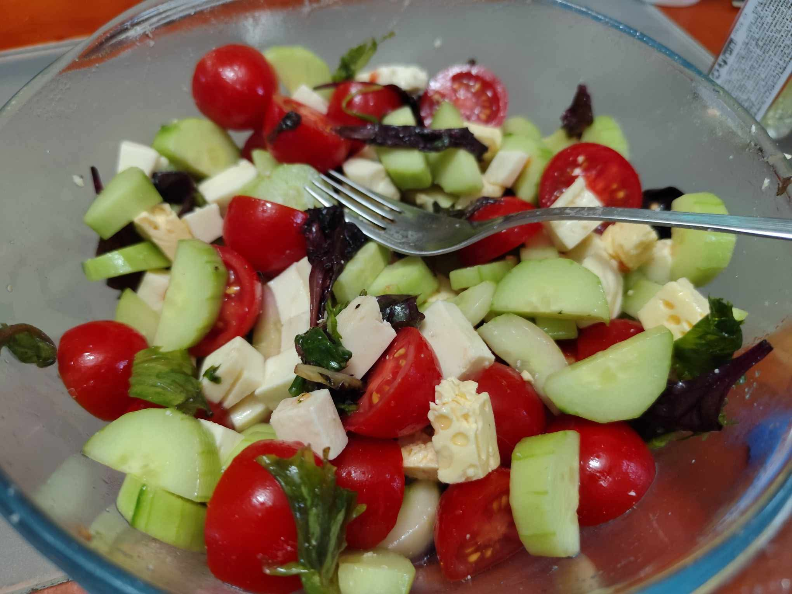
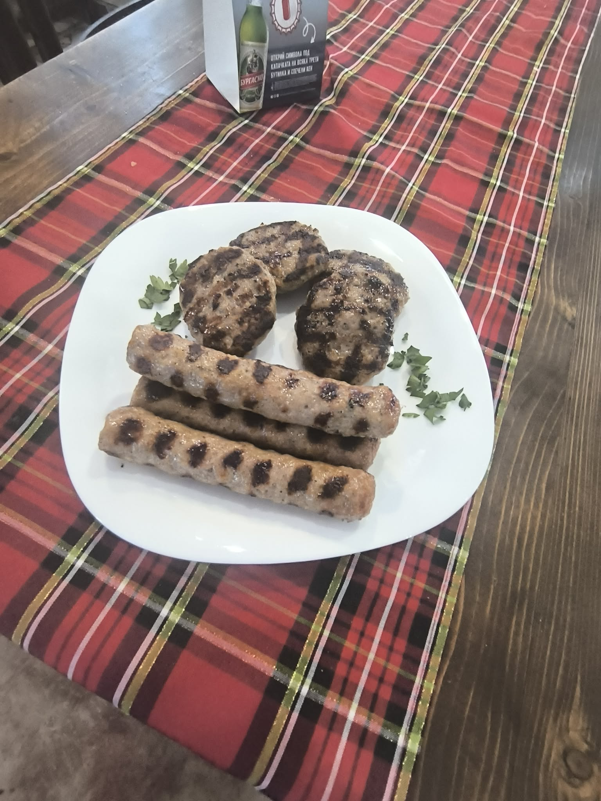
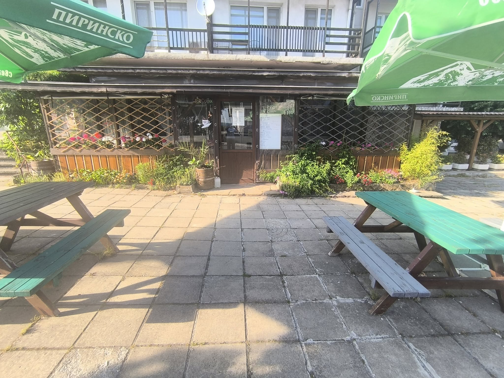
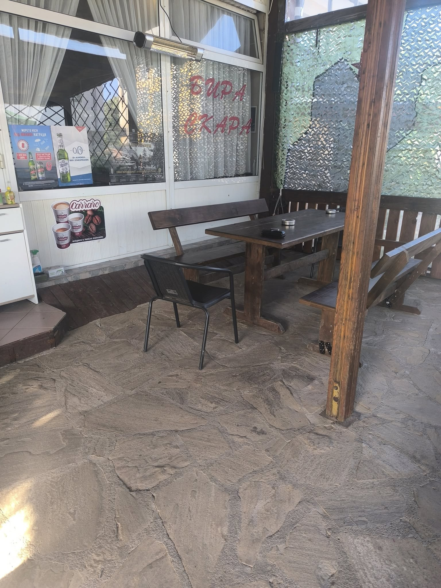
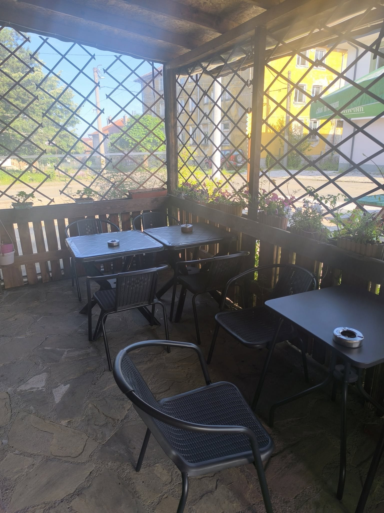
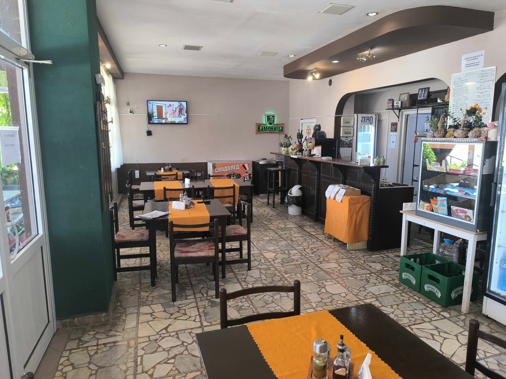
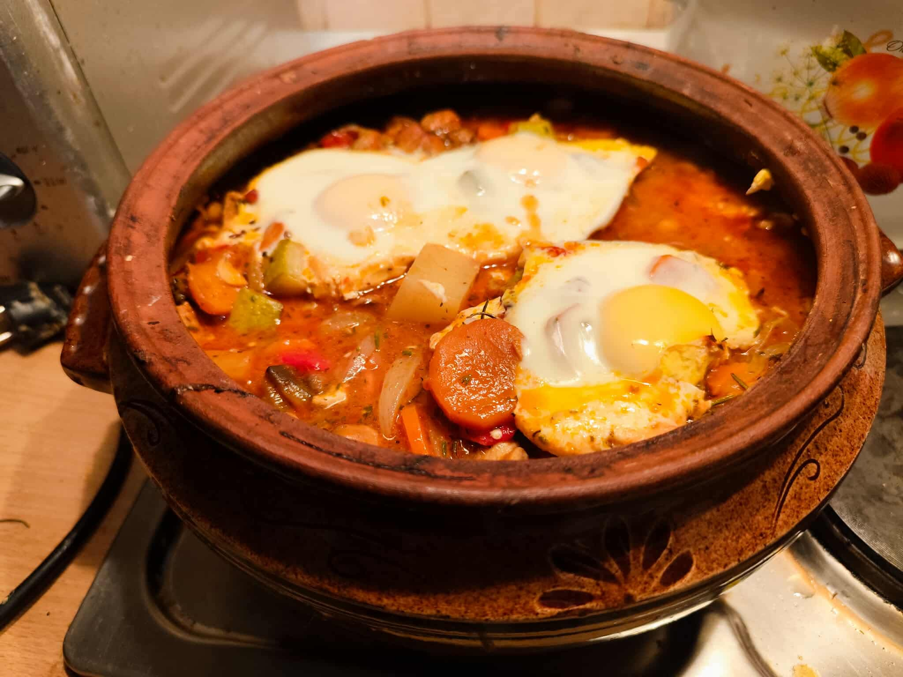
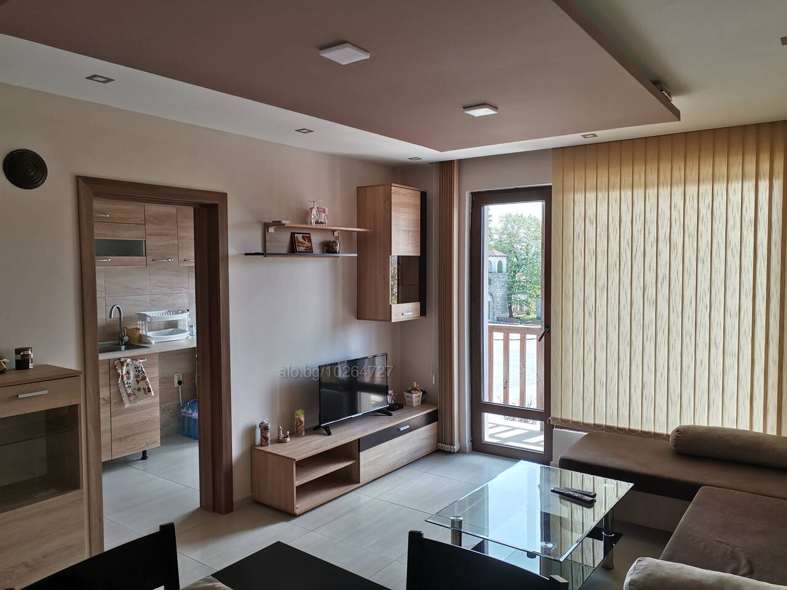
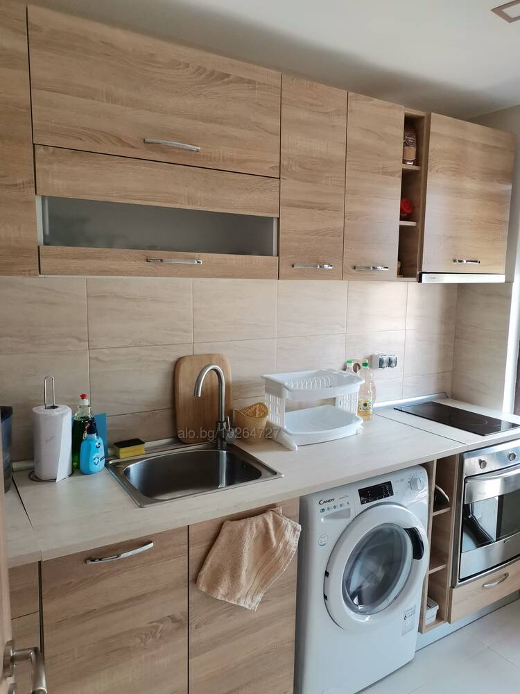

Село Граматиково • Странджа
Бистро Колибаре
Домашно приготвена храна, скара, свежи салати и вкусно кафе в сърцето на Странджа. Семейно заведение с топъл прием.
Скара
Домашни гозби
Свежи салати
Кафе
Кухня
Храна, която се усеща близка още от първата хапка.
Колибаре носи духа на семейното бистро в Граматиково: дървени маси, топли порции и спокойна странджанска атмосфера за хора, които искат да хапнат добре.
- Сочна скара и познати български вкусове.
- Салати с домати, краставици, сирене и свежи подправки.
- Топли ястия, кафе и домашен подход към всяка маса.


Кетъринг
Домашна храна за гости извън бистрото.
Бистро Колибаре приготвя храна и за къща за гости, като менюто може да се уточни предварително според броя хора, повода и предпочитанията на компанията.
По предварителна заявка
Меню по желание
За групи и семейства
Закуска, обяд или вечеря
Атмосфера
Място за непринудено сядане и добра храна.
Интериорът е семпъл и познат: дърво, каре, светлина през прозорците и маси, които канят към спокоен разговор.
За кафе
Спокойно начало на деня в сърцето на Странджа.
За тържества
Рождени дни, семейни поводи и фирмени събирания.
За престой
Към бистрото е обявен и апартамент под наем.

Галерия
Вижте атмосферата в Бистро Колибаре.






Наоколо
Какво да видите преди или след хапване в Колибаре.
Граматиково е удобно място за кратка закуска преди разходка или обяд след маршрут в Странджа. Селото е на високо било над долината на Велека, с гледки към Резовското било и турска Странджа.
Панорами над Велека
От района на Граматиково се откриват гледки към долината на река Велека, Резовското било и южната част на Странджа. Подходящо е за кратка спирка след кафе.
Горската сбирка
Представителна експозиция за биологичното разнообразие на Странджа и историята на горското дело в района. Добър избор за гости с деца или при по-кратко време.
Църква “Св. 40 Мъченици”
Храм с история от края на XVIII век и паметник на културата. Подходяща спирка за хора, които искат да усетят старото Граматиково.
Параклисите на Граматиково
Сред почитаните места са “Св. Илия” на около 2 км южно от селото, “Св. Богородица” в м. Качул и “Св. Св. Константин и Елена” в м. Язмицата.
Параклис “Св. Троица”
Едно от най-интересните места в Странджа: параклис върху входа на естествена пещера, каменни стъпала, аязмо и кът за отдих. Наблизо расте стар дъб лъжник.
Голямата аязма
Свято място във Влахов дол, свързано с нестинарските села Българи, Кости, Граматиково, Кондолово и Сливарово. Достъпът е по маркирани маршрути.
Дендрариум в м. Качул
Колекция от дървета и храсти край река Велека, включително чуждоземни видове и местна странджанска дендрофлора. Подходящо за спокойна природна разходка.
Тракийски следи и стар римски път
Околностите на Граматиково са познати с тракийски некрополи и могили, рудни находища, следи от антични селища и стар римски път.
Престой в Граматиково
Хапнете в Колибаре и останете в центъра на селото.
За гости, които искат повече от кратък обяд, има отделен апартамент за нощувки в центъра на Граматиково. Подходящ е за до 4 гости и комбинира удобството на самостоятелен престой с домашна храна наблизо.
До 4 гости
60 кв.м.
Тераса
Wi-Fi
Оборудвана кухня
Гледка към площада



Контакт
Запазете маса или вижте актуалните предложения.
Бистро "Колибаре" село Граматиково е ресторант на ул. Петрова Нива 29, Gramatikovo, Bulgaria, 8166.
Телефон
+359 88 802 9267
WhatsApp
Пишете в WhatsApp
Имейл
lussikalin177@gmail.com
Работно време
Понеделник - събота: 7:00 - 15:00 и 17:30 - 22:30
Неделя: 7:00 - 13:30
Неделя: 7:00 - 13:30